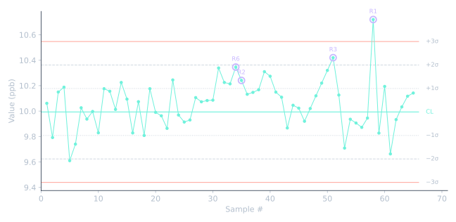

Individuals(I) 관리도에 넬슨 룰 8개를 모두 적용하고, 규칙을 어긴 시료를 표시하는 작은 파이썬 도구입니다.
미량 분석 실험실의 일일 QC 결과(예: 매일 측정하는 ICP-MS 점검 표준)를 확인하려고 만들었습니다. 3σ를 벗어난 점 하나는 눈으로도 쉽게 찾습니다. 느린 shift와 drift는 그렇지 않고, 대개 그쪽이 실제 원인을 가리킵니다. 새 표준용액 Lot, 콘이나 튜빙 마모, 세정 조건 변경 같은 것들입니다.

하는 일
- 측정 순서대로 된 결과 CSV를 읽습니다.
- 기준 구간에서 중심선과 σ를 정합니다. σ는 MR̄ / 1.128(Individuals 관리도의 일반적인 추정)입니다. 분석법 검증에서 얻은 평균과 σ를 직접 넣을 수도 있습니다.
- 모든 점을 8개 규칙으로 확인합니다.
violations.csv와control_chart.png를 저장합니다.
| 룰 | 패턴 | 실험실에서 흔히 뜻하는 것 |
|---|---|---|
| 1 | 1개 점이 3σ 밖 | 돌발 오류: 오염, 희석 실수, 바이알 뒤바뀜 |
| 2 | 9개 연속 중심선 한쪽 | Shift: 표준용액·시약 Lot 교체, 재교정 |
| 3 | 6개 연속 꾸준히 상승 또는 하강 | Drift: 콘·튜빙 마모, 표준용액 열화 |
| 4 | 14개 연속 교대로 오르내림 | 과잉 조정, 또는 장비 2대·분석자 2명이 번갈아 측정 |
| 5 | 3개 중 2개가 같은 쪽 2σ 밖 | Shift의 초기 신호 |
| 6 | 5개 중 4개가 같은 쪽 1σ 밖 | 작지만 지속되는 shift |
| 7 | 15개 연속 1σ 안 | 변동이 너무 작음: σ 설정 오류, 또는 서로 다른 데이터 혼합 |
| 8 | 8개 연속 1σ 밖, 양쪽에 걸쳐 | 서로 다른 두 집단이 섞임 |
규칙 문구는 아래 참고문헌에 요약된 Nelson(1984)을 따랐습니다.
코드 받기
도구는 작은 파일 4개입니다: nelson_rules.py, test_nelson_rules.py, make_sample_data.py, data/sample_qc.csv.
빠른 실행
pip install numpy pandas matplotlib
python make_sample_data.py # 가상 데이터만 생성
python nelson_rules.py data/sample_qc.csv --baseline 25
python test_nelson_rules.py # 규칙마다 테스트 1개
예시 데이터의 출력:
Center line = 9.9930, sigma = 0.1847 (MR-bar/1.128 from first 25 points)
4 pattern(s) found
sample 34 Rule 6: 4 of 5 points beyond 1 sigma, same side [31-34]
sample 35 Rule 2: 9 points in a row on the same side of the center line [27-35]
sample 51 Rule 3: 6 points in a row steadily increasing or decreasing [46-51]
sample 58 Rule 1: 1 point beyond 3 sigma [58-58]
예시 데이터에는 문제 세 가지를 일부러 넣었습니다. 31~40번 shift, 46~51번 drift, 58번 이상값. 셋 다 찾아냅니다. Shift는 34번 시료에서 룰 6으로 잡히는데, 이 점은 아직 2σ 안에 있어서 단순한 한계 확인으로는 통과됩니다.
참고와 한계
- 데이터는 가상입니다. 이 저장소 어디에도 회사나 고객 데이터를 쓰지 않았습니다.
- σ는 기준 구간에서 나옵니다. 기준 구간에 이미 문제가 있으면 한계가 너무 넓어집니다. 검증된 분석법이라면
--mean과--sigma를 쓰세요. - 8개 규칙을 모두 돌리면 오경보율이 올라갑니다. 실제로는 실험실이 알고 있는 고장 유형에 맞는 규칙을 고르고, 규칙마다 대응을 적어 두는 경우가 많습니다. 모든 규칙을 켜 두고 경보 분류를 AI에 맡기는 방식은 같은 관리도, 두 가지 해석에 정리했습니다.
- 각 패턴은 완성되는 첫 점에서 한 번만 보고하고, 이어지는 점마다 반복하지 않습니다.
만든 방법
AI 도우미(Claude)로 코드 초안을 만들었습니다. 그다음 각 규칙을 공개된 정의와 대조하고, 규칙마다 직접 만든 테스트를 하나씩 썼습니다. 걸리면 안 되는 경우도 포함했습니다(한쪽 8개는 룰 2가 아님, 한쪽에만 1σ 밖 8개는 룰 8이 아님).
참고문헌
- L. S. Nelson, "The Shewhart Control Chart — Tests for Special Causes", Journal of Quality Technology, 1984, 16(4), 237–239.
- Nelson rules — Wikipedia
- Nelson Rules (and Western Electric Rules) — Quality Gurus